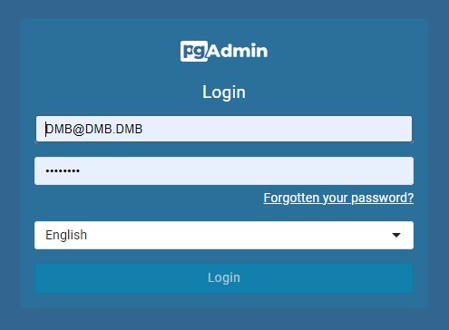
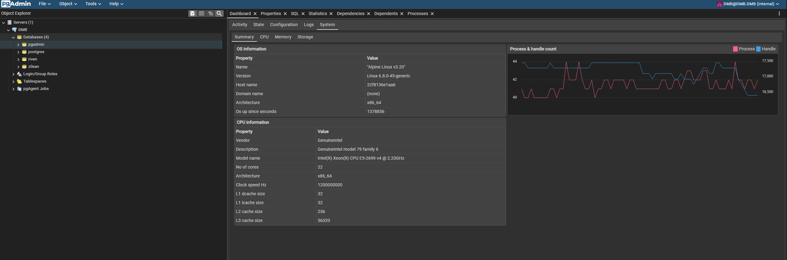
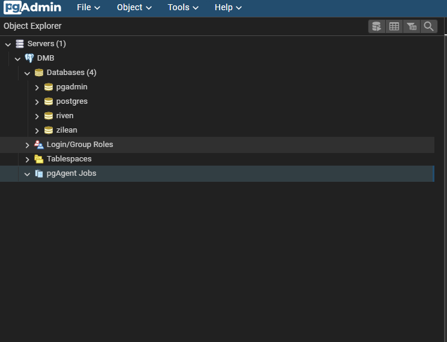
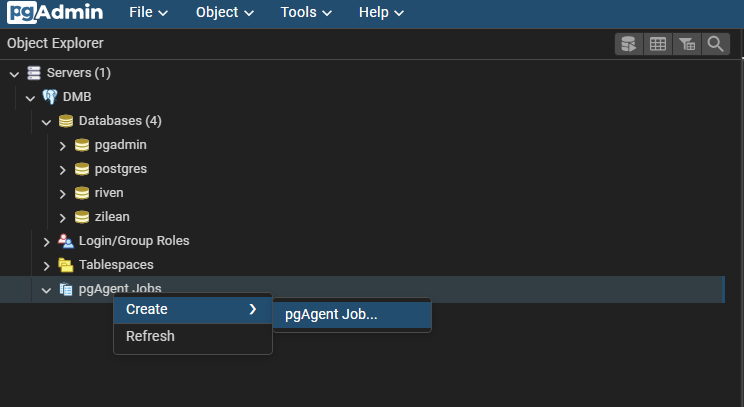
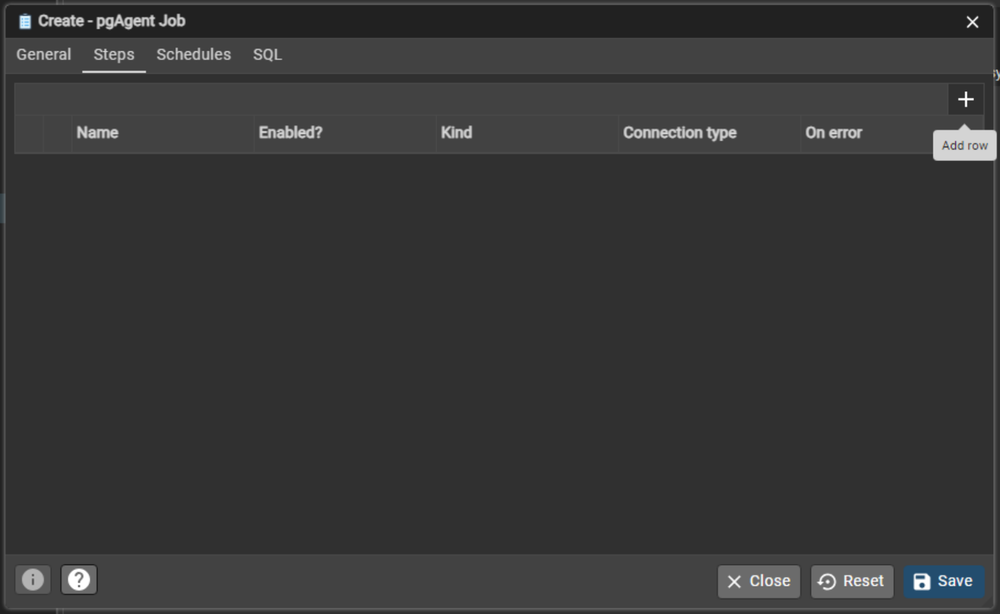
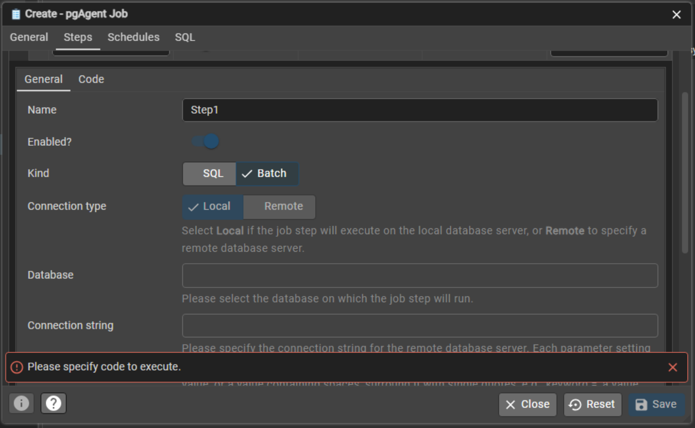
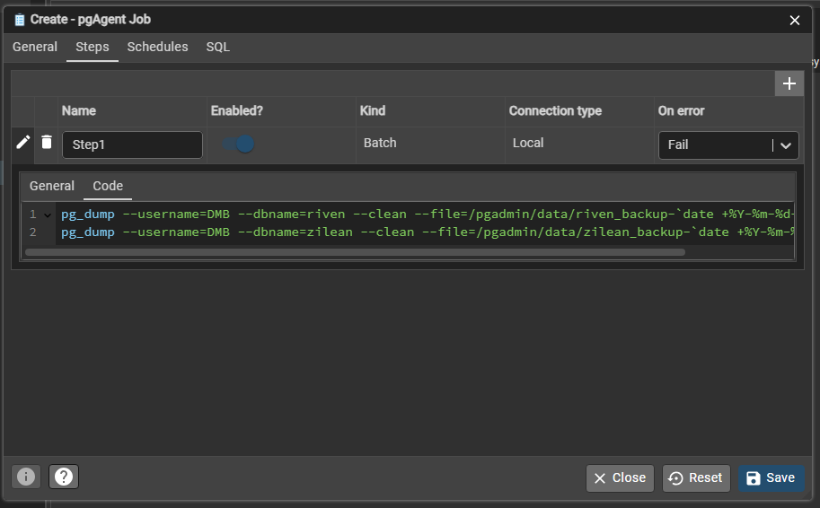

pgAdmin 4#
pgAdmin 4 is a web-based administration tool for managing PostgreSQL databases. DMB includes pgAdmin pre-installed and configured to work out of the box, allowing you to inspect, query, and back up your databases directly from a browser.
⚙️ Configuration Settings in dmb_config.json#
"pgadmin": {
"enabled": true,
"process_name": "pgAdmin4",
"config_dir": "/pgadmin/data",
"config_file": "/pgadmin/data/config_local.py",
"log_file": "/pgadmin/data/pgadmin4.log",
"port": 5050,
"default_server": "0.0.0.0",
"setup_email": "DMB@DMB.DMB",
"setup_password": "postgres",
"command": []
},
üîç Configuration Key Descriptions#
enabled: Whether to start the pgAdmin service.process_name: The label used in logs and process tracking.config_dir– Directory where pgAdmin configuration files are stored.config_file– Path to the primary pgAdmin configuration file.port: Port exposed for the pgAdmin.-
default_server: IP address pgAdmin should bind to.0.0.0.0allows access to pgAdmin from all addresses -
setup_email: The email address to be used with pgAdmin. setup_password: The password to be used with pgAdmin.command– The command used to start pgAdmin.
üö™ Accessing pgAdmin#
- Navigate to:
http://<host>:<port>- default port
5055
- default port
- Login using the credentials set via environment variables:
PGADMIN_SETUP_EMAIL- default:
DMB@DMB.DMB
- default:
PGADMIN_SETUP_PASSWORD- default:
postgres
- default:
The email is used as the username. It does not need to be a real email address.

üîê Server Configuration#
- pgAdmin is preconfigured with a server connection named DMB.
- On first login, you must enter the password for the PostgreSQL server connection.
- Default password:
postgres - Or, use the value of
POSTGRES_PASSWORDif set in your environment.

⚙️ Extensions#
The following PostgreSQL extensions are included in the DMB image:
üìà system_stats#
Provides system performance statistics inside PostgreSQL.
- Find it in the pgAdmin dashboard under the connected database (e.g., pgadmin or riven).

üìÖ pgAgent#
A job scheduler for PostgreSQL. Useful for: - Scheduling backups - Routine maintenance

üíæ Example: Scheduled Backups with pgAgent#
- Navigate to
pgAgent Jobsunder your connected DMB server. -
Right-click →
Create → pgAgent Job
-
Enter the job name and any comments you like:

-
In the Steps tab, click the
+button to Add row to the steps:
-
Click the
pencilicon to edit the new row and configure the step:
-
Enter a step name and select
Kind=Batch:
-
Add backup commands to the Code tab:
The following code is an example of a backup command. You may need to modify it to suit your needs.
pg_dump --username=DMB --dbname=riven --clean --file=/pgadmin/data/riven_backup-`date +%Y-%m-%d-%H-%M-%S`.sql pg_dump --username=DMB --dbname=zilean --clean --file=/pgadmin/data/zilean_backup-`date +%Y-%m-%d-%H-%M-%S`.sql
-
Click on the Schedules tab to set the schedule for the backup.
-
As before with the Steps, add a row to add a new schedule, and edit the row to configure the schedule.
-
Enter the schedule name, select the Enabled? toggle, and set the Start and End dates for the schedule.

-
On the Repeat tab, set the repeat frequency (e.g., daily at 12:00 AM):

-
Click Save to save the scheduled backup job.
Backups are stored in /pgadmin/data.
üìö More Info#
ü߆ Summary#
| Setting | Value |
|---|---|
| UI Address | http://<host>:5050 |
| Default Email/Username | DMB@DMB.DMB |
| Default Password | postgres |
| Data Directory | /pgadmin/data |
| Config File | /pgadmin/data/config_local.py |